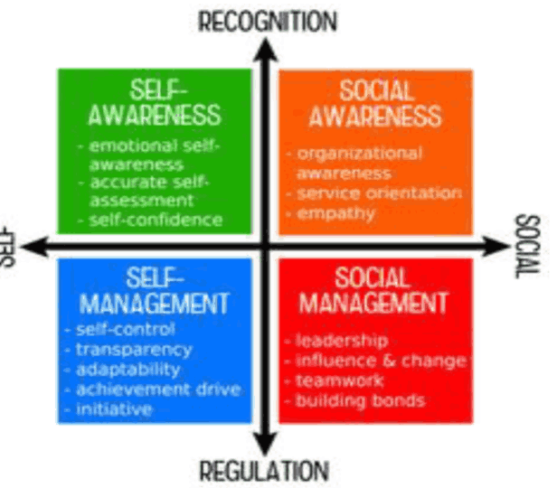
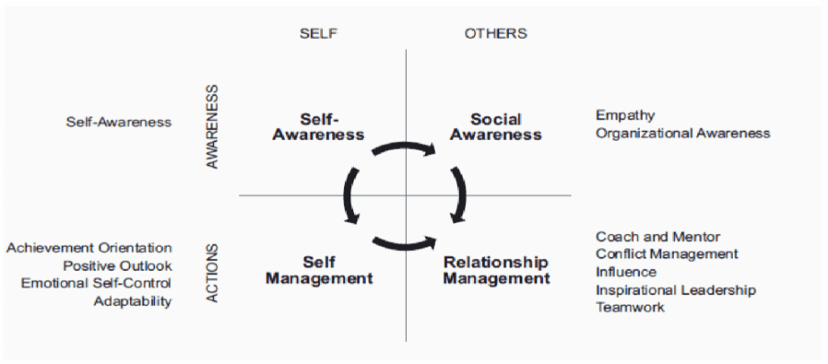
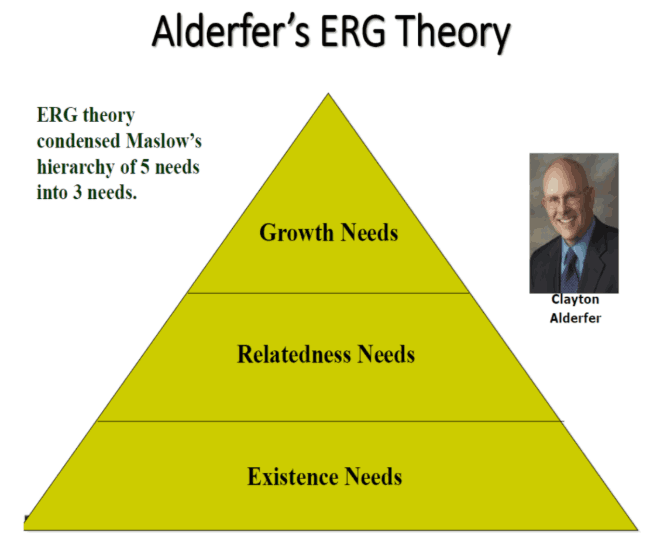
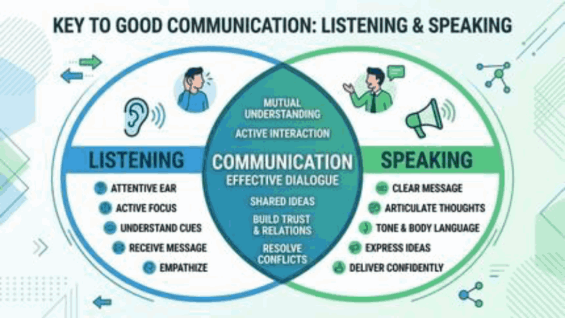

Topic 11: Customise Approach for Individuals
Chủ đề 11: Cách tiếp cận phù hợp với từng cá nhân
TS. Gavin Nicholson · 45 slide
Quy ước của bản dịch. Mỗi slide là một khối: cột bên trái là nguyên văn tiếng Anh (màu xám), cột bên phải là bản tiếng Việt (màu đen). Nội dung được dịch sát theo từng slide, không lược bỏ. Chữ nằm trong hình đồ hoạ của slide cũng được dịch. Các dòng lặp lại trên hầu hết slide (“RMIT University”, “Ready for what’s next”) không nhắc lại. Số slide theo thứ tự trang của file PDF.
Phần mô tả hình ảnh và các ghi chú về slide gốc được ghi bằng chữ nghiêng màu xám. Các khung “Giải thích thêm”, “Cách chơi” và “Hướng dẫn nhập vai” là phần tóm tắt, giải thích bằng tiếng Việt do bản dịch bổ sung, không có trên slide gốc.
Tên riêng, tên tổ chức và trích dẫn nguồn giữ nguyên. Bốn phong cách làm việc: Driver – “Người Thúc đẩy”, Analytical – “Người Phân tích”, Amiable – “Người Hoà nhã”, Expressive – “Người Biểu cảm”. Self-awareness là “tự nhận thức”, self-management là “tự quản lý”, social awareness là “nhận thức xã hội”, relationship management là “quản lý mối quan hệ”, emotional intelligence là “trí tuệ cảm xúc”. Ownership là “tinh thần làm chủ”. Tên mô hình ERG và từ coaching giữ nguyên.
Leadership - Customised Approach for Individuals
Lãnh đạo – Cách tiếp cận phù hợp với từng cá nhân
Dr. Gavin Nicholson
TS. Gavin Nicholson
Dr Gavin Nicholson — Lecturer, Management, The Business School, RMIT Vietnam
TS. Gavin Nicholson — Giảng viên ngành Quản lý, Khoa Kinh doanh (The Business School), RMIT Việt Nam
- Doctorate of Business Administration - Victoria University, Melbourne, Australia
- Master of Business Management – Victoria University, Melbourne, Australia
- Graduate Certificate of Business – Swinburne University, Melbourne, Australia
- Tiến sĩ Quản trị Kinh doanh – Victoria University, Melbourne, Úc
- Thạc sĩ Quản lý Kinh doanh – Victoria University, Melbourne, Úc
- Chứng chỉ Sau đại học về Kinh doanh – Swinburne University, Melbourne, Úc
Bên phải slide là ảnh chân dung của diễn giả.
Agenda
Chương trình
| # | English | Tiếng Việt |
| 1 | Understanding People: personality, behaviour and work styles Do you understand yourself, why people behave the way they do, and how this impacts their work styles? | Thấu hiểu con người: tính cách, hành vi và phong cách làm việc Bạn có hiểu bản thân mình, hiểu vì sao mọi người hành xử như vậy, và điều này ảnh hưởng thế nào đến phong cách làm việc của họ không? |
| 2 | Self- Awareness and Relationship Management Allows Leaders to build trust, make better decisions and foster high-performing teams | Tự nhận thức và Quản lý mối quan hệ Giúp người lãnh đạo xây dựng niềm tin, ra quyết định tốt hơn và phát triển những đội ngũ hiệu suất cao |
| 3 | Adapting Your Communication for Diverse Personalities Do people hear you or do they listen? It’s not about changing who you are, but building understanding, trust and influence | Điều chỉnh cách giao tiếp cho phù hợp với những tính cách khác nhau Mọi người chỉ nghe thấy bạn, hay họ thực sự lắng nghe bạn? Vấn đề không phải là thay đổi con người bạn, mà là xây dựng sự thấu hiểu, niềm tin và tầm ảnh hưởng |
| 4 | Effective Communication, Motivation and the ERG Theory Identifying how effective communication can motivate different work styles and using the ERG theory to build engagement | Giao tiếp hiệu quả, Động lực và Thuyết ERG Nhận ra cách giao tiếp hiệu quả có thể tạo động lực cho những phong cách làm việc khác nhau, và dùng thuyết ERG để xây dựng sự gắn kết |
Understanding People: Personality, Behaviour and Work Styles
Thấu hiểu con người: Tính cách, Hành vi và Phong cách làm việc
Slide mở đầu phần 1: ảnh một doanh nhân cầm nhiều chiếc mặt nạ biểu cảm khác nhau.
How Well Do I Know Myself?
Tôi hiểu bản thân mình đến mức nào?
- Who am I?
- Do others see me the way I see myself?
- Why do other people behave/think differently from me?
- Tôi là ai?
- Người khác có nhìn tôi giống như tôi nhìn bản thân mình không?
- Vì sao người khác hành xử/suy nghĩ khác tôi?
Slide có hai ảnh minh hoạ: một người nhìn vào gương và một nhóm người.
Leading Others - Understanding Behaviour
Lãnh đạo người khác – Thấu hiểu hành vi
- personality, skills, attributes, values, ethics
- tính cách, kỹ năng, phẩm chất, giá trị, đạo đức
- work, group, job, characteristics, organisation, personal life
- công việc, nhóm, vị trí, đặc điểm công việc, tổ chức, đời sống cá nhân
- strong and weak situations
- tình huống mạnh và tình huống yếu
- survival and success
- tồn tại và thành công
“Tình huống mạnh” là tình huống có quy tắc và kỳ vọng rõ ràng, khiến mọi người hành xử giống nhau; “tình huống yếu” là tình huống ít ràng buộc, nên tính cách riêng của mỗi người thể hiện rõ hơn. (Ghi chú của bản dịch.)
Leading Others - Understanding Behaviour
Lãnh đạo người khác – Thấu hiểu hành vi
- Internal traits like shyness, openness, or an internal locus of control create consistent patterns in how people think and respond
- Những đặc điểm bên trong như tính nhút nhát, sự cởi mở hay “locus of control” bên trong (tin rằng kết quả do chính mình quyết định) tạo ra những khuôn mẫu ổn định trong cách mọi người suy nghĩ và phản ứng
- How people process memories, make decisions, and use mental shortcuts dictates their interpretation of events
- Cách mọi người xử lý ký ức, ra quyết định và dùng các “lối tắt tư duy” quyết định cách họ diễn giải sự việc
- Feelings like fear, joy, or anger push people to overcome obstacles or react defensively
- Những cảm xúc như sợ hãi, vui mừng hay tức giận thúc đẩy con người vượt qua trở ngại hoặc phản ứng phòng thủ
Leading Others - Understanding Behaviour
Lãnh đạo người khác – Thấu hiểu hành vi
- Societal rules, group memberships, and values shape what actions people view as acceptable or expected.
- Quy tắc xã hội, việc thuộc về các nhóm và các giá trị định hình những hành động mà mọi người coi là chấp nhận được hoặc được kỳ vọng.
- Physical settings (like noisy or crowded spaces) and the presence of other people heavily influence compliance, conformity, and general conduct.
- Không gian vật lý (như nơi ồn ào hay đông đúc) và sự có mặt của người khác ảnh hưởng mạnh đến sự tuân thủ, xu hướng làm theo số đông và cách cư xử nói chung.
- Past events, family background, and childhood upbringing create deep-seated beliefs that guide adult choices, often without conscious awareness
- Những sự kiện trong quá khứ, hoàn cảnh gia đình và cách được nuôi dạy thời thơ ấu tạo nên những niềm tin sâu xa, chi phối các lựa chọn khi trưởng thành, thường mà không hề nhận ra
Cultivating Trust through Behaviour
Vun đắp niềm tin qua hành vi
- Trust is the positive expectation that another will not act opportunistically (Robbins:336)
- It is a history-dependent process - Authenticity
- Niềm tin là kỳ vọng tích cực rằng người khác sẽ không hành động theo kiểu cơ hội, vụ lợi (Robbins:336)
- Đó là một quá trình phụ thuộc vào lịch sử tương tác – Sự chân thực
- integrity – without which other dimensions are meaningless
- competence
- consistency
- loyalty
- openness
- chính trực – thiếu nó thì các khía cạnh khác đều vô nghĩa
- năng lực
- nhất quán
- trung thành
- cởi mở
Hình minh hoạ ở giữa slide: các khối chữ “TRUST” (niềm tin), kèm dòng chữ “The cost of mistrust” (Cái giá của sự thiếu tin tưởng) và “The value of trust” (Giá trị của niềm tin).
Behaviour and Diverse Work Styles
Hành vi và các phong cách làm việc khác nhau
- Results-focused
- Direct
- Decisive
- Action-oriented
- Tập trung vào kết quả
- Thẳng thắn
- Quyết đoán
- Thiên về hành động
- Relationship-focused
- Supportive
- Collaborative
- Patient
- Tập trung vào mối quan hệ
- Hay hỗ trợ
- Hợp tác
- Kiên nhẫn
- Detailed-oriented
- Logical
- Data-driven
- Risk-conscious
- Chú trọng chi tiết
- Logic
- Dựa trên dữ liệu
- Thận trọng với rủi ro
- Visionary
- Enthusiastic
- Creative
- Big Picture Thinker
- Có tầm nhìn
- Nhiệt tình
- Sáng tạo
- Tư duy bức tranh tổng thể
Mỗi phong cách đi kèm một ảnh minh hoạ.
Strategies For Managing Diverse Personalities
Chiến lược quản lý những tính cách khác nhau
- Effective Leadership is not a one size fits all. Adapt your approach to fit the needs of your team. Some employees may prefer detailed instructions, while others thrive with creative freedom; adjust your communication and management style accordingly.
- Lãnh đạo hiệu quả không có một khuôn mẫu chung cho tất cả. Hãy điều chỉnh cách tiếp cận cho phù hợp với nhu cầu của đội. Có nhân viên thích hướng dẫn chi tiết, có người lại phát huy tốt nhất khi được tự do sáng tạo; hãy điều chỉnh phong cách giao tiếp và quản lý của bạn cho phù hợp.
- Create an environment where team members feel comfortable expressing themselves. Hold regular one-on-one meetings to check in on their needs, goals and challenges. This not only builds trust but also helps you understand what motivates them
- Tạo môi trường để các thành viên cảm thấy thoải mái bày tỏ bản thân. Tổ chức các buổi gặp 1-1 định kỳ để nắm bắt nhu cầu, mục tiêu và khó khăn của họ. Việc này không chỉ xây dựng niềm tin mà còn giúp bạn hiểu điều gì tạo động lực cho họ
Strategies For Managing Diverse Personalities
Chiến lược quản lý những tính cách khác nhau
- Assign tasks based on your team’s strengths; the analytical thinker might excel in project planning, while the social butterfly could lead client presentations. Matching tasks to skills increases efficiency and job satisfaction.
- Giao việc dựa trên điểm mạnh của đội; người có tư duy phân tích có thể làm rất tốt việc lập kế hoạch dự án, còn người hoạt ngôn, giỏi giao tiếp có thể dẫn dắt các buổi thuyết trình với khách hàng. Giao việc phù hợp với kỹ năng giúp tăng hiệu quả và sự hài lòng trong công việc.
- Personality differences can sometimes lead to misunderstandings or disagreements. As a leader, intervene early by encouraging open dialogue and helping team members find common ground. Approach conflicts with empathy and focus on shared goals and solutions, rather than blame.
- Khác biệt về tính cách đôi khi dẫn đến hiểu lầm hoặc bất đồng. Là người lãnh đạo, hãy can thiệp sớm bằng cách khuyến khích đối thoại cởi mở và giúp các thành viên tìm được điểm chung. Tiếp cận xung đột bằng sự thấu cảm, tập trung vào mục tiêu chung và giải pháp, thay vì đổ lỗi.
Strategies For Managing Diverse Personalities
Chiến lược quản lý những tính cách khác nhau
- Recognise the potential in each individual and offer opportunities for personal and professional development. This might include training, mentorship, or ‘stretch’ assignments (self-efficacy) that challenge them to grow beyond their comfort zone.
- Nhận ra tiềm năng của từng cá nhân và tạo cơ hội phát triển bản thân lẫn nghề nghiệp. Có thể là đào tạo, kèm cặp (mentorship) hoặc giao các nhiệm vụ “vươn tầm” (stretch assignment – củng cố niềm tin vào năng lực bản thân, self-efficacy) thử thách họ phát triển vượt ra khỏi vùng an toàn.
Case Study – Generational Leadership Change in Vietnam
Nghiên cứu tình huống – Sự thay đổi lãnh đạo giữa các thế hệ tại Việt Nam
- 100 Gen Z males and 100 Gen Z females
- Collectivism, Harmony, and Community Orientation – Convergent
- Hierarchy, Power Distance, and Voice Constraints – Convergent
- Global Exposure and Cultural Hybridisation – Divergent
- Human-Centric Leadership Relational – Divergent
- Adaptability, Learning and Change Orientation Relational – Divergent
- Purpose, Vision and National Development - Convergent
- Leadership Identity, Aspiration and Self-Leadership - Divergent
- 100 nam và 100 nữ thuộc thế hệ Gen Z
- Chủ nghĩa tập thể, sự hài hoà và định hướng cộng đồng – Hội tụ
- Thứ bậc, khoảng cách quyền lực và những hạn chế trong việc lên tiếng – Hội tụ
- Tiếp xúc toàn cầu và sự pha trộn văn hoá – Phân kỳ
- Lãnh đạo lấy con người làm trung tâm, thiên về quan hệ – Phân kỳ
- Khả năng thích ứng, học hỏi và định hướng thay đổi, thiên về quan hệ – Phân kỳ
- Mục đích, tầm nhìn và sự phát triển đất nước – Hội tụ
- Bản sắc lãnh đạo, khát vọng và khả năng tự lãnh đạo – Phân kỳ
Giải thích thêm
Nghiên cứu khảo sát 200 người Gen Z (100 nam, 100 nữ). Mỗi nhóm năng lực được gắn nhãn Convergent (hội tụ – Gen Z vẫn giữ giống thế hệ lãnh đạo trước, tức “tre già”) hoặc Divergent (phân kỳ – Gen Z khác với thế hệ trước, tức “măng mọc”). Theo slide, Gen Z vẫn giữ tinh thần tập thể, sự tôn trọng thứ bậc và gắn mục đích với sự phát triển đất nước; nhưng khác biệt ở mức độ tiếp xúc toàn cầu, cách lãnh đạo lấy con người làm trung tâm, khả năng thích ứng và cách tự định hình bản thân như một người lãnh đạo.
Self Awareness and Relationship Management
Tự nhận thức và Quản lý mối quan hệ
Slide mở đầu phần 2: ảnh một người đứng nhìn biểu đồ tăng trưởng.
Emotional Intelligence — Understanding You – Understanding Others
Trí tuệ cảm xúc — Hiểu mình – Hiểu người
- Successful leaders know their strengths and weaknesses. They continually seek personal development and learn new skills or by empowering others and using their skills
- Người lãnh đạo thành công biết điểm mạnh và điểm yếu của mình. Họ liên tục tìm cách phát triển bản thân và học kỹ năng mới, hoặc trao quyền cho người khác và tận dụng kỹ năng của họ
- Leaders know they need other people. Sometimes you lead and other times you follow. Leaders develop other leaders
- Người lãnh đạo biết họ cần người khác. Có lúc bạn dẫn dắt, có lúc bạn đi theo. Người lãnh đạo phát triển những người lãnh đạo khác
- Leadership means being visionary and having the ability to influence and motivate others to achieve organisational goals.
- Lãnh đạo nghĩa là có tầm nhìn và có khả năng ảnh hưởng, tạo động lực cho người khác để đạt được mục tiêu của tổ chức.
Self-Awareness
Tự nhận thức
- Self-Awareness is imperative in leadership contexts.
- You need to be thoughtful about the experience that you want people to have of you as a leader. A key tenet of leadership is the capability for growth and learning.
- You will likely encounter situations as a leader that require you to learn and grow at the very moment others expect you to be an authority. You will inevitably make mistakes in your leadership journey. Do not be embarrassed to do what it takes to develop as a leader.
- Tự nhận thức là điều bắt buộc trong vai trò lãnh đạo.
- Bạn cần cân nhắc kỹ trải nghiệm mà bạn muốn mọi người có được khi làm việc với bạn trong vai trò lãnh đạo. Một nguyên tắc cốt lõi của lãnh đạo là khả năng phát triển và học hỏi.
- Là người lãnh đạo, nhiều khả năng bạn sẽ gặp những tình huống đòi hỏi bạn phải học hỏi và trưởng thành đúng vào lúc người khác kỳ vọng bạn là người có thẩm quyền. Bạn chắc chắn sẽ mắc sai lầm trên hành trình lãnh đạo. Đừng ngại làm những gì cần thiết để phát triển với tư cách một người lãnh đạo.
Bên trái slide là ảnh một người phụ nữ cầm chiếc mặt nạ trắng.
Developing Leadership Attributes: Self and Social Awareness
Phát triển phẩm chất lãnh đạo: Tự nhận thức và Nhận thức xã hội
- the ability to understand your own emotions and their effects
- khả năng hiểu cảm xúc của chính mình và tác động của chúng
- empathy
- remember not everyone values or does things in the same way as you
- thấu cảm
- hãy nhớ rằng không phải ai cũng coi trọng hay làm mọi việc giống như bạn

Developing Leadership Attributes: Self and Social Management
Phát triển phẩm chất lãnh đạo: Tự quản lý và Quản lý xã hội
- achievement orientation – the concern of working towards standards of excellence, which also assists you in taking the initiative and seek out new opportunities
- adaptability
- emotional self-control - regulation
- positive outlook
- định hướng thành tích – mối quan tâm hướng tới các tiêu chuẩn xuất sắc, điều này cũng giúp bạn chủ động và tìm kiếm cơ hội mới
- khả năng thích ứng
- tự chủ cảm xúc – điều chỉnh
- thái độ tích cực
- the ability to understand the ‘power’ relationships in one’s own group or organisation to build team bonds and influence change – regulate the halo effect and build leadership silos
- khả năng hiểu các mối quan hệ “quyền lực” trong nhóm hoặc tổ chức của mình để xây dựng sự gắn kết trong đội và tạo ảnh hưởng đến sự thay đổi – kiểm soát hiệu ứng hào quang (halo effect) và xây dựng các “silo” lãnh đạo
Slide dùng lại ma trận trí tuệ cảm xúc ở slide 18 (xem hình và chú thích ở trên). Halo effect (hiệu ứng hào quang): xu hướng để một ấn tượng tốt về một mặt chi phối đánh giá của ta về toàn bộ con người. Cụm “build leadership silos” được dịch sát nguyên văn.
Relationship Management
Quản lý mối quan hệ
- Conflict Management
- Coaching and Mentoring
- Power and Influence (Expert and Referent)
- Inspirational Leadership (Lead by bringing out the best in people)
- Teamwork
- Pattern Recognition (Systems and Critical Thinking – Problem Solving)
- Quản lý xung đột
- Coaching và kèm cặp (mentoring)
- Quyền lực và ảnh hưởng (quyền lực chuyên môn và quyền lực cá nhân/uy tín)
- Lãnh đạo truyền cảm hứng (lãnh đạo bằng cách khơi dậy điều tốt nhất ở mỗi người)
- Làm việc nhóm
- Nhận diện khuôn mẫu (tư duy hệ thống và tư duy phản biện – giải quyết vấn đề)
Expert power – quyền lực đến từ chuyên môn; Referent power – quyền lực đến từ sự quý mến, ngưỡng mộ của người khác. Bên phải slide là ảnh một nhóm đồng nghiệp đang trao đổi.
Self-Awareness and Relationship Management
Tự nhận thức và Quản lý mối quan hệ

circular arrows
Emotional Intelligence – Self-Assessment Questionnaire
Trí tuệ cảm xúc – Bảng câu hỏi tự đánh giá
Slide hoạt động, gồm hai hình: một tấm bảng có chữ “Activity” (Hoạt động) và một hình minh hoạ “Emotional Intelligence – Understanding, managing & connecting with emotions” (Trí tuệ cảm xúc – Hiểu, quản lý và kết nối với cảm xúc) với các nhãn Self-awareness (Tự nhận thức), Self-regulation (Tự điều chỉnh), Empathy (Thấu cảm), Social skills (Kỹ năng xã hội). Bảng câu hỏi được phát riêng, không có trong file PDF.
Key Points – Self-Awareness and Relationship Management
Điểm chính – Tự nhận thức và Quản lý mối quan hệ
Adapting Your Communication for Diverse Personalities
Điều chỉnh cách giao tiếp cho phù hợp với những tính cách khác nhau
Slide mở đầu phần 3: ảnh ghép chân dung nhiều người với biểu cảm khác nhau.
Adapting Communication For Diverse Personalities
Điều chỉnh giao tiếp cho phù hợp với những tính cách khác nhau
- Extroverts process thoughts out loud and prefer rapid interaction, while introverts need quiet time to reflect before responding
- Người hướng ngoại vừa nói vừa suy nghĩ và thích tương tác nhanh, còn người hướng nội cần thời gian yên tĩnh để suy ngẫm trước khi phản hồi
- Some people focus strictly on facts, data, and bottom lines, while others prioritise relationships, feelings, and team harmony. Balance your message with both data and personal warmth.
- Có người chỉ tập trung vào sự kiện, dữ liệu và kết quả cuối cùng, trong khi người khác ưu tiên mối quan hệ, cảm xúc và sự hài hoà trong đội. Hãy cân bằng thông điệp của bạn bằng cả dữ liệu lẫn sự ấm áp cá nhân.
- Don’t view different communication styles as difficult or argumentative.
- Đừng coi những phong cách giao tiếp khác mình là khó chịu hay thích tranh cãi.
Strategies for Communicating across Diverse Personalities
Chiến lược giao tiếp với những tính cách khác nhau
- Focus entirely on the speaker without interrupting. Watch for nonverbal cues like tone and body language to understand their true meaning
- Tập trung hoàn toàn vào người nói, không ngắt lời. Để ý các tín hiệu phi ngôn ngữ như giọng điệu và ngôn ngữ cơ thể để hiểu đúng ý họ
- Match your communication speed and directness to the comfort level of the person you are talking to.
- Điều chỉnh tốc độ và mức độ thẳng thắn khi giao tiếp cho phù hợp với mức độ thoải mái của người bạn đang nói chuyện cùng.
- Use questions starting with "what" or "how" to let people elaborate in a way that feels natural to them.
- Dùng những câu hỏi bắt đầu bằng “cái gì” hoặc “như thế nào” để mọi người trình bày chi tiết theo cách tự nhiên với họ.
- Be mindful of how your words affect others. Check your own personal biases before judging a different style of expression
- Chú ý đến tác động của lời nói của bạn lên người khác. Hãy tự kiểm tra những thiên kiến cá nhân trước khi đánh giá một cách thể hiện khác mình
Communication Preferences and Work Styles
Sở thích giao tiếp và phong cách làm việc
- Be concise
- Focus on outcomes
- Avoid Excessive Detail
- Nói ngắn gọn
- Tập trung vào kết quả
- Tránh đi quá nhiều vào chi tiết
- Build Rapport
- Show Empathy
- Encourage Participation
- Xây dựng sự gần gũi
- Thể hiện sự thấu cảm
- Khuyến khích tham gia
- Facts and Evidence
- Allow time to process information
- Be organised
- Dữ kiện và bằng chứng
- Cho họ thời gian xử lý thông tin
- Trình bày có tổ chức
- Focus on possibilities
- Encourage ideas
- Keep the communication engaging
- Tập trung vào các khả năng
- Khuyến khích ý tưởng
- Giữ cho cuộc trao đổi hấp dẫn
Slide này nối tiếp slide 10: cùng bốn phong cách làm việc, nay kèm cách giao tiếp phù hợp với từng phong cách.
Communication, Motivation and the ERG Theory
Giao tiếp, Động lực và Thuyết ERG
Slide mở đầu phần 4: ảnh người đang leo lên đỉnh núi lúc hoàng hôn, kéo tay người phía sau.
Communication, Human Needs and Motivation
Giao tiếp, Nhu cầu con người và Động lực
- The drive to excel, achieve success against a set of standards, and tackle moderately challenging goals.
- Động lực vươn lên xuất sắc, đạt thành công theo một bộ tiêu chuẩn và theo đuổi những mục tiêu có độ thử thách vừa phải.
- The desire for friendly, close interpersonal relationships and social acceptance
- Mong muốn có những mối quan hệ thân thiện, gần gũi với người khác và được xã hội chấp nhận
- The desire to influence, lead, and make others behave in a way they would not have otherwise
- Mong muốn gây ảnh hưởng, dẫn dắt và khiến người khác hành xử theo cách mà lẽ ra họ sẽ không làm
Đây là thuyết ba nhu cầu (Acquired Needs Theory) của David McClelland; slide không nêu tên tác giả.
Alderfer’s – Existence, Growth and Relatedness Theory
Thuyết Tồn tại – Quan hệ – Phát triển (ERG) của Alderfer
- ERG Theory (existence, relatedness, growth)
- Synthesises Maslow
- Belief that humans have existence needs and growth needs
- The relatedness needs are different for all persons but assist in the sliding scale between existence and growth
- We continually move along the sliding scale between existence and growth based on motivation and need requirements
- Thuyết ERG (existence – tồn tại, relatedness – quan hệ, growth – phát triển)
- Tổng hợp lại thuyết của Maslow
- Quan niệm rằng con người có nhu cầu tồn tại và nhu cầu phát triển
- Nhu cầu quan hệ khác nhau ở mỗi người nhưng giúp con người dịch chuyển trên thang trượt giữa tồn tại và phát triển
- Chúng ta liên tục dịch chuyển trên thang trượt giữa tồn tại và phát triển, tuỳ theo động lực và nhu cầu

Giải thích thêm
Ba tầng của ERG tương ứng với tháp Maslow: Tồn tại gộp nhu cầu sinh lý và an toàn (lương, điều kiện làm việc, sự ổn định); Quan hệ tương ứng nhu cầu xã hội và một phần nhu cầu được tôn trọng (quan hệ với đồng nghiệp, cấp trên, cảm giác thuộc về); Phát triển gộp phần còn lại của nhu cầu được tôn trọng và nhu cầu tự hiện thực hoá (học hỏi, thử thách, tiến bộ).
Khác với Maslow, ERG cho rằng một người có thể theo đuổi nhiều nhu cầu cùng lúc và không nhất thiết đi theo thứ tự từ dưới lên. Đây là ý của “thang trượt” trên slide: tuỳ hoàn cảnh, mỗi người dịch chuyển lên xuống giữa tồn tại và phát triển. Với người quản lý, điều này nghĩa là cần nhận ra nhân viên đang ở đâu trên thang để chọn cách giao tiếp và tạo động lực phù hợp. (Ghi chú của bản dịch.)
Any Questions?
Có câu hỏi nào không?
Slide chỉ có hình ảnh: các dấu chấm hỏi và dòng chữ “Any questions?”.
Thank you!
Cảm ơn!
Name: Dr. Gavin Nicholson
Email address: gavin.nicholson@rmit.edu.vn
Họ tên: TS. Gavin Nicholson
Email: gavin.nicholson@rmit.edu.vn
Communication Games: Developing Your Communication Style
Trò chơi giao tiếp: Phát triển phong cách giao tiếp của bạn
Slide mở đầu phần thực hành: ảnh các hình nhân với bong bóng thoại phía trên.
Activity: Extrovert -v- Introvert
Hoạt động: Hướng ngoại và Hướng nội
Hình minh hoạ: một người “EXTROVERT” (hướng ngoại) đứng giữa ánh sáng và nhóm người, đối diện một người “INTROVERT” (hướng nội) đứng một mình trong bóng tối.
Customising Your Communication Style For Diverse Personalities
Điều chỉnh phong cách giao tiếp cho phù hợp với những tính cách khác nhau
In this activity, you will observe and critique the differences between Extroverts and Introverts.
Trong hoạt động này, bạn sẽ quan sát và nhận xét những khác biệt giữa người hướng ngoại và người hướng nội.
- I want you to discuss the organisation of a company picnic. What date, time, and where should you hold this picnic? Is there a theme? What type of catering will you require, and what activities will you do at the picnic
- Hãy thảo luận về việc tổ chức một buổi dã ngoại của công ty. Nên tổ chức vào ngày nào, giờ nào, ở đâu? Có chủ đề không? Cần dịch vụ ăn uống kiểu gì, và sẽ có những hoạt động gì trong buổi dã ngoại
- I want you to discuss the organisation of a company family day. What date, time, and where should you hold this family day? Is there a theme? What type of catering will you require, and what activities will you do at the family day?
- Hãy thảo luận về việc tổ chức một ngày hội gia đình của công ty. Nên tổ chức vào ngày nào, giờ nào, ở đâu? Có chủ đề không? Cần dịch vụ ăn uống kiểu gì, và sẽ có những hoạt động gì trong ngày hội gia đình?
Cách chơi (tóm tắt)
Lớp chia thành hai nhóm theo xu hướng tự nhận: hướng ngoại và hướng nội. Hai nhóm nhận hai đề gần giống nhau (dã ngoại công ty – ngày hội gia đình) để nội dung không khác biệt nhiều; điểm cần quan sát là cách mỗi nhóm thảo luận: ai nói trước, nhịp độ, mức độ nói to suy nghĩ, có khoảng lặng để suy ngẫm hay không, ý tưởng được ghi lại hay nói ra. Sau đó cả lớp nhận xét khác biệt và liên hệ với slide 25 (hướng nội – hướng ngoại) và slide 26 (điều chỉnh giọng điệu, nhịp độ). (Ghi chú của bản dịch.)
Common Manager – Staff Conversations at Zalo?
Những cuộc trao đổi thường gặp giữa quản lý và nhân viên tại Zalo?
- Performance and ownership: A team member is capable but is not taking enough ownership or needs to be more proactive. The manager needs to give constructive feedback while keeping the employee motivated.
- Different working styles/personality conflicts: Two colleagues have different communication or working styles, leading to tension. The manager needs to mediate without taking sides and help them find a way to work effectively together.
- Promotion and perceived fairness: A strong employee is disappointed after being passed over for a promotion and feels that their contribution has not been recognised. The manager needs to explain the decision without damaging motivation, while also being honest about what the employee needs to improve.
- Hiệu suất và tinh thần làm chủ: Một thành viên có năng lực nhưng chưa đủ tinh thần làm chủ công việc hoặc cần chủ động hơn. Người quản lý cần đưa ra phản hồi mang tính xây dựng mà vẫn giữ được động lực của nhân viên.
- Phong cách làm việc khác nhau/xung đột tính cách: Hai đồng nghiệp có phong cách giao tiếp hoặc làm việc khác nhau, dẫn đến căng thẳng. Người quản lý cần hoà giải mà không đứng về phía ai, và giúp họ tìm cách làm việc cùng nhau hiệu quả.
- Thăng chức và cảm nhận về sự công bằng: Một nhân viên giỏi thất vọng sau khi không được chọn thăng chức và cảm thấy đóng góp của mình chưa được ghi nhận. Người quản lý cần giải thích quyết định mà không làm giảm động lực, đồng thời thẳng thắn về những điều nhân viên cần cải thiện.
Bên phải slide là ảnh minh hoạ những người đang trò chuyện, xung quanh là các bong bóng thoại. Ba tình huống này được triển khai thành ba bài nhập vai ở slide 37–42.
Role Play Scenario 1: Encouraging Ownership and Proactivity
Tình huống nhập vai 1: Khuyến khích tinh thần làm chủ và sự chủ động
- Manager (Ninh): Calm, supportive, focused on development. Wants to empower the employee.
- Team Member (Quang): Skilled and reliable but hesitant to take ownership. Prefers clear direction and avoids risks.
- Quản lý (Ninh): Điềm tĩnh, hay hỗ trợ, chú trọng phát triển nhân viên. Muốn trao quyền cho nhân viên.
- Thành viên (Quang): Có kỹ năng và đáng tin cậy nhưng ngần ngại nhận trách nhiệm làm chủ. Thích được chỉ đạo rõ ràng và tránh rủi ro.
Ninh has scheduled a one-on-one meeting with Quang after noticing several recent situations where he could have taken initiative, such as waiting for approval on small decisions or not anticipating next steps in a project.
Ninh đã hẹn một buổi gặp 1-1 với Quang sau khi nhận thấy gần đây có nhiều tình huống mà lẽ ra Quang có thể chủ động, chẳng hạn chờ phê duyệt cho những quyết định nhỏ hoặc không lường trước các bước tiếp theo của dự án.
- Give clear, actionable feedback
- Reinforce Quang’s strengths
- Motivate Quang to be more proactive
- Maintain trust and psychological safety
- Đưa ra phản hồi rõ ràng, có thể hành động được
- Củng cố điểm mạnh của Quang
- Tạo động lực để Quang chủ động hơn
- Giữ được niềm tin và sự an toàn tâm lý
Slide có ảnh minh hoạ hai người đang trao đổi.
Hướng dẫn nhập vai (tóm tắt)
Mỗi nhóm có ít nhất hai vai: Ninh (quản lý) và Quang (nhân viên); những người còn lại quan sát. Theo bài học, Quang thuộc kiểu cần chỉ dẫn rõ ràng và ngại rủi ro, nên người đóng vai Ninh nên: mở đầu bằng điểm mạnh cụ thể của Quang; nêu một hai ví dụ cụ thể (chờ duyệt việc nhỏ, không lường trước bước tiếp theo) thay vì nhận xét chung chung; dùng câu hỏi mở (“Theo em, lần tới mình có thể…?”) để Quang tự đề xuất; thống nhất phạm vi Quang được tự quyết; và kết thúc bằng một bước hành động cụ thể. Người quan sát dùng ba câu hỏi ở slide 38 để nhận xét. (Ghi chú của bản dịch.)
Role Play Scenario 1: Encouraging Ownership and Proactivity — Debrief
Tình huống nhập vai 1: Khuyến khích tinh thần làm chủ và sự chủ động — Tổng kết
- What language/tone helped maintain motivation?
- What made the feedback clear and actionable?
- How did the manager balance support with accountability?
- Ngôn từ/giọng điệu nào giúp duy trì động lực?
- Điều gì khiến phản hồi rõ ràng và có thể hành động được?
- Người quản lý đã cân bằng giữa hỗ trợ và yêu cầu trách nhiệm như thế nào?
Bên trái slide là ảnh các khối chữ “DEBRIEF” (Tổng kết).
Role Play Scenario 2: Mediating Different Working Styles
Tình huống nhập vai 2: Hoà giải những phong cách làm việc khác nhau
Two competent colleagues have increasingly tense interactions because of their different communication and working styles. One prefers fast decisions and direct communication; the other prefers thoughtful analysis and written clarity. Their friction is slowing down collaboration and affecting team morale.
The manager must mediate the conversation, stay neutral, and guide them toward shared expectations and a healthier working dynamic.
Hai đồng nghiệp có năng lực ngày càng căng thẳng khi làm việc với nhau vì khác biệt về phong cách giao tiếp và làm việc. Một người thích quyết định nhanh và giao tiếp thẳng; người kia thích phân tích kỹ và trao đổi rõ ràng bằng văn bản. Sự va chạm này làm chậm việc phối hợp và ảnh hưởng đến tinh thần của đội.
Người quản lý phải hoà giải cuộc trao đổi, giữ trung lập và dẫn dắt họ đến những kỳ vọng chung và một cách làm việc với nhau lành mạnh hơn.
- Manager (Trung): Not experienced, attempts to remain neutral, but focused on solutions.
- Colleague 1 (Ngan): Fast-paced, direct, prefers quick decisions and verbal communication.
- Colleague 2 (Thu): Thoughtful, detail-oriented, prefers written communication and time to process.
- Quản lý (Trung): Chưa nhiều kinh nghiệm, cố gắng giữ trung lập nhưng tập trung vào giải pháp.
- Đồng nghiệp 1 (Ngân): Nhịp độ nhanh, thẳng thắn, thích quyết định nhanh và trao đổi bằng lời nói.
- Đồng nghiệp 2 (Thu): Chín chắn, chú trọng chi tiết, thích trao đổi bằng văn bản và cần thời gian để xử lý thông tin.
The manager has invited Ngan and Thu to a joint meeting after noticing tension in project discussions and receiving feedback from both individuals. The goal is not to assign blame but to help them understand each other’s styles and agree on practical ways to collaborate more effectively.
Người quản lý đã mời Ngân và Thu đến một buổi họp chung sau khi nhận thấy căng thẳng trong các buổi thảo luận dự án và nhận được phản hồi từ cả hai người. Mục đích không phải là quy trách nhiệm, mà là giúp họ hiểu phong cách của nhau và thống nhất những cách thiết thực để phối hợp hiệu quả hơn.
- Improve mutual understanding of what each person values, what triggers frustration and how their styles complement each other
- How they will communicate and make decisions that benefit the organisation and each other
- Giúp hai bên hiểu nhau hơn: mỗi người coi trọng điều gì, điều gì khiến họ bực bội và phong cách của họ bổ sung cho nhau như thế nào
- Họ sẽ giao tiếp và ra quyết định như thế nào để có lợi cho tổ chức và cho cả hai
Slide có ảnh minh hoạ một nhóm người đang trao đổi.
Hướng dẫn nhập vai (tóm tắt)
Ba vai: Trung (quản lý), Ngân và Thu; những người còn lại quan sát. Có thể đối chiếu với bốn phong cách làm việc ở slide 10 và 27: Ngân gần với kiểu Driver (cần ngắn gọn, tập trung vào kết quả), Thu gần với kiểu Analytical (cần dữ kiện, thời gian xử lý và sự rõ ràng). Người đóng vai Trung nên: mở đầu bằng mục đích chung, không phán xét; để từng người nói điều mình coi trọng và điều khiến mình bực bội, sau đó nhắc lại (paraphrase) ý của họ; chỉ ra điểm mạnh bổ sung cho nhau của hai phong cách; và cùng chốt vài thoả thuận cụ thể (ví dụ: việc gì quyết bằng lời trong buổi họp, việc gì cần tóm tắt bằng văn bản, thời hạn phản hồi). Người quan sát dùng các câu hỏi ở slide 40. (Ghi chú của bản dịch.)
Role Play Scenario 2: Mediating Different Working Styles — Debrief
Tình huống nhập vai 2: Hoà giải những phong cách làm việc khác nhau — Tổng kết
- How did the manager stay neutral?
- What techniques helped reduce tension?
- How did the manager turn differences into actionable agreements?
- Người quản lý đã giữ trung lập như thế nào?
- Những kỹ thuật nào giúp giảm căng thẳng?
- Người quản lý đã biến những khác biệt thành các thoả thuận có thể hành động được như thế nào?
Bên phải slide là ảnh các mũi tên ngược chiều và chữ “DEBRIEF” (Tổng kết).
Role Play Scenario 3: Managing Disappointment / Missed Promotion
Tình huống nhập vai 3: Xử lý sự thất vọng / Không được thăng chức
A high-performing employee expected to be promoted and is disappointed after learning that another colleague was selected. They feel their contributions have not been fully recognised.
Một nhân viên có hiệu suất cao từng kỳ vọng được thăng chức và thất vọng khi biết một đồng nghiệp khác được chọn. Họ cảm thấy đóng góp của mình chưa được ghi nhận đầy đủ.
- Manager (Giang): Empathetic, transparent, focused on development and retention.
- Employee (Trang): Strong performer, ambitious, frustrated about being passed over.
- Quản lý (Giang): Thấu cảm, minh bạch, chú trọng phát triển và giữ chân nhân viên.
- Nhân viên (Trang): Làm việc giỏi, nhiều tham vọng, bực bội vì không được chọn.
Giang has invited Trang for a private conversation after noticing her disengagement following the promotion announcement. Trang has been a consistent top performer and was considered for the role, but another candidate was selected due to broader leadership readiness.
Giang đã mời Trang nói chuyện riêng sau khi nhận thấy Trang kém gắn kết hơn kể từ khi có thông báo thăng chức. Trang luôn thuộc nhóm làm việc tốt nhất và đã được cân nhắc cho vị trí này, nhưng một ứng viên khác được chọn vì sự sẵn sàng lãnh đạo toàn diện hơn.
- Acknowledge the employee’s feelings
- Explain the decision transparently
- Reinforce the employee’s value
- Provide clear development guidance
- Maintain motivation and engagement
- Ghi nhận cảm xúc của nhân viên
- Giải thích quyết định một cách minh bạch
- Khẳng định giá trị của nhân viên
- Đưa ra định hướng phát triển rõ ràng
- Duy trì động lực và sự gắn kết
Slide có ảnh minh hoạ một người phụ nữ đang suy nghĩ bên bàn làm việc.
Hướng dẫn nhập vai (tóm tắt)
Hai vai: Giang (quản lý) và Trang (nhân viên); những người còn lại quan sát. Người đóng vai Giang nên đi theo thứ tự năm mục tiêu trên slide: để Trang nói trước và ghi nhận cảm xúc của Trang mà không tranh luận; giải thích lý do của quyết định (“sự sẵn sàng lãnh đạo toàn diện hơn”) một cách thẳng thắn, không đổ cho quy trình; nhắc lại những đóng góp cụ thể của Trang; nêu rõ những năng lực lãnh đạo Trang cần phát triển và cơ hội để thể hiện chúng; và thống nhất một kế hoạch phát triển cùng lịch trao đổi tiếp theo. Có thể liên hệ với thuyết ERG ở slide 30: Trang đang ở phía “phát triển” của thang trượt, nên kế hoạch phát triển là đòn bẩy tạo động lực chính. Người quan sát dùng các câu hỏi ở slide 42. (Ghi chú của bản dịch.)
Role Play Scenario 3: Managing Disappointment / Missed Promotion — Debrief
Tình huống nhập vai 3: Xử lý sự thất vọng / Không được thăng chức — Tổng kết
- What language helped maintain motivation?
- How did the manager avoid taking a defensive stance?
- How was the development plan framed as an opportunity rather than a correction?
- Ngôn từ nào giúp duy trì động lực?
- Người quản lý đã tránh thái độ phòng thủ như thế nào?
- Kế hoạch phát triển đã được trình bày như một cơ hội thay vì một sự “sửa sai” như thế nào?
Bên trái slide là ảnh các mảnh ghép xếp thành chữ “DEBRIEF” (Tổng kết).
Key to Good Communication: Listening & Speaking
Chìa khoá của giao tiếp tốt: Lắng nghe & Nói
Toàn bộ slide là một hình đồ hoạ; chữ trong hình được dịch theo cấu trúc hình ở khung dưới.
- Attentive ear
Lắng tai chăm chú - Active focus
Tập trung chủ động - Understand cues
Hiểu các tín hiệu - Receive message
Tiếp nhận thông điệp - Empathize
Thấu cảm
- Mutual understanding
Hiểu nhau - Active interaction
Tương tác chủ động - Effective dialogue
Đối thoại hiệu quả - Shared ideas
Chia sẻ ý tưởng - Build trust & relations
Xây dựng niềm tin & quan hệ - Resolve conflicts
Giải quyết xung đột
- Clear message
Thông điệp rõ ràng - Articulate thoughts
Diễn đạt suy nghĩ mạch lạc - Tone & body language
Giọng điệu & ngôn ngữ cơ thể - Express ideas
Bày tỏ ý tưởng - Deliver confidently
Truyền đạt tự tin

Effective Manager-to-Employee communication requires active listening, transparency, and clear expectations.
Giao tiếp hiệu quả giữa quản lý và nhân viên đòi hỏi lắng nghe chủ động, minh bạch và kỳ vọng rõ ràng.
Mỗi ý có một ảnh minh hoạ nhỏ phía trên.
Regular one-on-ones and psychological safety
Gặp 1-1 định kỳ và sự an toàn tâm lý
Slide không có tiêu đề riêng; tiêu đề ở trên do bản dịch đặt để dễ tra cứu. Ảnh minh hoạ: các mảnh giấy nhớ “Helpful tips” (Mẹo hữu ích).